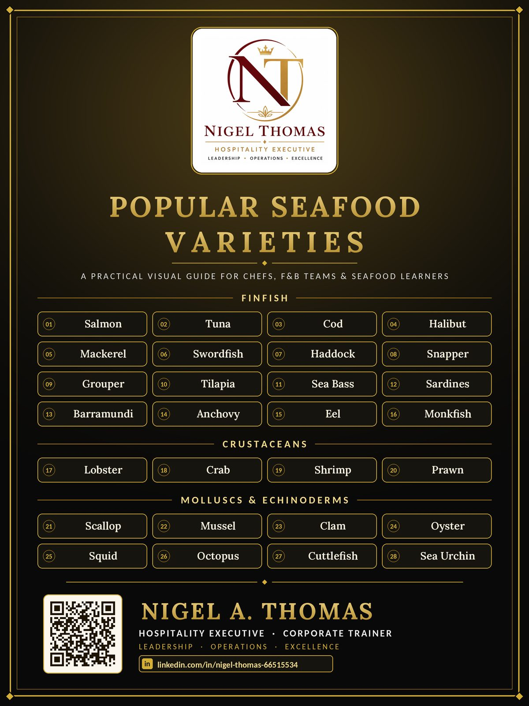

Popular Seafood Varieties: A Practical Guide for Chefs and F&B Teams
Walk into any well-run kitchen at six in the morning and you can tell within minutes how seriously the team takes seafood. The receiving table is clear, the ice is fresh, the thermometer is in hand, and someone is already checking gills, eyes and shells. Seafood is the most unforgiving category on the menu. It spoils faster than meat, it varies more from one delivery to the next, and a single mistake in storage or handling can turn a premium dish into a guest complaint or a food safety incident.
It is also one of the most profitable categories when handled well. Guests happily pay more for a perfectly seared scallop or a whole grilled snapper, and a server who can explain the difference between a prawn and a shrimp builds trust at the table. After three decades in luxury hotels, resorts and cruise operations across India, the Middle East and the USA, I have seen seafood make and break banquet menus, buffets and fine dining rooms alike.
This guide walks through 28 popular seafood varieties in the same order as the infographic at the bottom of the page, which you can download for your kitchen, your training room or your service briefing. For each variety you will find what it is, how it behaves in the kitchen, and where it fits best on a menu.
How the Seafood Family Is Organised
Before memorising names, learn the families. Every variety in this guide belongs to one of four groups, and the group tells you most of what you need to know about storage, cooking and service.
Finfish are vertebrate fish with fins and scales or skin. Within this group, oily fish such as salmon, mackerel and sardines carry more natural fat, cook quickly and spoil faster, while lean white fish such as cod, haddock and halibut are delicate, flake easily and need gentler heat.
Crustaceans include lobster, crab, shrimp and prawn. They have a hard outer shell, cook in minutes, and turn rubbery when overcooked.
Molluscs divide into bivalves such as scallops, mussels, clams and oysters, and cephalopods such as squid, octopus and cuttlefish. Bivalves are often served live or very lightly cooked, so sourcing and temperature control matter enormously. Cephalopods go one of two ways: cooked for seconds or cooked for an hour, never in between.
The last group has just one member here, the sea urchin, an echinoderm prized for its sweet, briny roe.
Finfish: Sixteen Varieties You Will Meet Most Often
Finfish dominate most seafood menus, so this is where your team needs the strongest product knowledge.
1Salmon
A rich, oily fish with pink to orange flesh and a buttery texture. It stays moist under high heat, which makes it forgiving for line cooks, and it takes well to curing, smoking and raw preparations when handled correctly.
2Tuna
A firm, meaty fish with deep red flesh that is best served rare or raw. Overcooking turns it dry and chalky, so cooks should sear it quickly, and receivers must check colour and smell carefully.
3Cod
A mild white fish with large, tender flakes and a clean flavour. It absorbs seasoning and sauces well, holds up to roasting, poaching and frying, and is a staple of pub and family dining.
4Halibut
A flatfish with thick, white, lean flesh and a sweet, delicate taste. It dries out quickly when overcooked, so gentle pan roasting or poaching works best, and its premium price demands careful portioning.
5Mackerel
A strongly flavoured oily fish with silvery skin and rich, dark flesh. It is highly perishable and must be very fresh, but its bold taste stands up to grilling, curing and pickling.
6Swordfish
A dense, meaty fish cut into steaks, with a mild flavour and few bones. It can dry out on the grill, so brushing with oil and watching the clock is essential for consistent results.
7Haddock
A close cousin of cod with a slightly sweeter taste and finer flake. It is popular smoked, and it performs well in batter, which makes it a reliable choice for high volume frying.
8Snapper
A lean fish with firm white flesh and a sweet, nutty flavour, often recognised by its pink or red skin. It suits whole preparations, and its crisp skin when pan seared delights guests.
9Grouper
A large reef fish with thick, firm, mild flesh that holds together in soups and stews. Its size makes it ideal for portion cutting, though availability and sourcing should always be confirmed.
10Tilapia
A freshwater fish with mild, lean, slightly sweet flesh that is widely farmed and affordable. It is easy to cook and consistent in size, which supports tight food cost control.
11Sea Bass
A premium fish with moist, white, delicate flesh and a clean taste. Crisp skin and gentle seasoning let the fish speak for itself, and a whole bass makes a striking tableside presentation.
12Sardines
Small, oily, silver fish packed with flavour and affordable at any scale. They are best cooked very fresh over a hot grill, and they also shine canned, marinated or served on toast.
13Barramundi
A prized fish from Asian and Australian waters with moist, buttery white flesh and a mild flavour. It is also farmed in many regions and gives chefs a dependable, versatile fillet.
14Anchovy
A tiny, intensely savoury fish that works as a seasoning as much as an ingredient. Salted or oil cured, it adds depth to sauces, dressings and pizzas, and a little goes a long way.
15Eel
A long, rich fish with fatty, tender flesh that is usually grilled or braised with a sweet glaze. It needs skilled preparation and must always be cooked thoroughly, never served raw.
16Monkfish
A firm, boneless tail with a texture often compared to lobster. It is mostly sold as the tail only, holds together in roasts and stews, and rewards chefs with excellent plate value.
Crustaceans: Shell, Sweetness and Speed
Crustaceans are quick to cook and quick to ruin. Train your team to time them carefully and to store them cold and clean.
17Lobster
The luxury centrepiece of the shellfish world, with sweet, dense meat in the tail and claws. Cook it just until opaque, because overcooking toughens it, and make sure live stock is lively when received.
18Crab
Sweet, delicate meat from the body and claws, available fresh, cooked or picked. Check origin and handling carefully, and use the rich brown meat for sauces and bisques.
19Shrimp
A small, fast cooking crustacean in countless sizes, sold fresh, frozen, peeled or shell on. Size grading drives price and plating, and overcooked shrimp curl tight and turn rubbery.
20Prawn
Often larger than shrimp, with a firmer, meatier bite and a sweet taste. The two names are used loosely in different regions, so confirm species and size with suppliers rather than relying on the label.
Molluscs and Echinoderms: Live Product, Live Responsibility
Bivalves and cephalopods need the most careful sourcing on the list, and many are served raw or lightly cooked. Use only reputable, documented suppliers.
21Scallop
A bivalve with a sweet, tender adductor muscle and sometimes the coral roe. Pat it dry and sear hard and fast for a golden crust, because wet scallops steam instead of browning.
22Mussel
A dark shelled bivalve that is affordable, farmed sustainably in many regions and quick to cook. Discard any that stay open before cooking or remain closed afterwards.
23Clam
A bivalve with a sweet, briny flavour, sold live in a range of sizes. Purge them in cold salted water to remove grit and cook only until the shells open.
24Oyster
A bivalve prized for its mineral, ocean flavour and often eaten raw. Strict cold chain control, tags and supplier documentation are essential, and shucking skill is a real service asset.
25Squid
A cephalopod with tender, mild flesh that turns tough when cooked a little too long. Flash fry or grill it in seconds, or braise it slowly until tender.
26Octopus
A cephalopod with a chewy texture that softens through long, gentle cooking. Simmering or braising first, then charring, gives tender meat with a smoky edge.
27Cuttlefish
A cephalopod similar to squid but thicker and sweeter, with ink prized in sauces. It tolerates longer cooking than squid and makes a dramatic plate when the ink is used.
28Sea Urchin
An echinoderm whose bright orange roe, called uni, tastes sweet, creamy and briny. It is extremely delicate and perishable, so serve it fresh and in small portions.
Quick Reference: Matching Seafood to the Menu
| If your priority is... | Consider |
|---|---|
| Rich, forgiving fish for volume service | Salmon |
| Delicate premium white fish | Halibut or Sea Bass |
| Budget friendly mains | Tilapia or Haddock |
| Raw bar and sashimi programmes | Tuna, Salmon or Oyster |
| Luxury centrepiece dishes | Lobster or Scallop |
| Bold flavour on a small budget | Sardines or Mackerel |
| Seasoning and depth in sauces | Anchovy |
Buying and Receiving: Where Quality Is Won or Lost
Great seafood cookery begins at the back door. Train every receiver to use their senses and a thermometer before signing the invoice.
- Whole fish should have clear, bright eyes, red gills, firm elastic flesh and a clean smell of the sea, never a sharp or ammonia odour.
- Fillets should look moist and translucent, with no gaping, browning or sticky film.
- Live shellfish must be alive: shells tightly closed or closing when tapped, and lobsters and crabs actively moving.
- Check temperature on arrival. Fresh fish should be received at 41°F (5°C) or below, packed in ice or under refrigeration.
- Check tags, labels and origin documents, especially for oysters, clams and mussels, and keep records for traceability.
Reject anything that fails these checks, and document the rejection. A firm receiving standard protects guests, margins and your reputation.
Costing, Yield and Portion Control
Seafood is purchased in many forms, so the purchase price never tells the whole story. A whole fish may cost less per kilogram than fillets, but after heads, bones, skin and trim the edible yield can be as low as forty to fifty percent. Always run a yield test, record the results, and cost each dish on the usable weight, not the invoice weight.
Standardise portion sizes by weight or count, and train cooks to portion consistently. Use trim creatively in fish cakes, stocks, chowders and staff meals so that nothing of value goes to waste. For shellfish, size grading such as count per kilogram controls both plate appearance and cost. Review seafood prices weekly, because market swings are larger here than in almost any other category, and adjust specials accordingly. For a refresher on controlling cost across the whole operation, read Food Cost Basics.
Food Safety and Allergen Awareness
Cook fish to an internal temperature of 145°F (63°C) unless a compliant raw or undercooked preparation has been properly sourced and approved. Store raw seafood below cooked and ready to eat food, and use separate boards, knives and utensils. Keep live shellfish refrigerated in breathable containers, never sealed in airtight bags or submerged in fresh water.
Fish and crustaceans are recognised major food allergens, and in many jurisdictions molluscs are regulated as allergens too. Train servers to ask about allergies at every table, to know which dishes contain which species, and to alert the kitchen early. Shared fryers, grills and marinades are common sources of cross contact, so build clear protocols for them. Always follow your local regulations and your company food safety plan.
Seafood on the Menu: Planning and Service Tips
Seafood suits almost every format. A seasonal menu can follow the catch calendar, and a du jour special lets you buy opportunistically and sell what is freshest that morning. An à la carte menu benefits from two or three signature seafood dishes with a clear price ladder, from an affordable fried fish to a premium lobster or scallop plate. To explore frying styles for casual menus, see 6 Types of Fried Fish, and for the formats themselves read Types of Menus in F&B Service.
Service staff are your best selling tool. Give them tasting notes, cooking times and pairing suggestions so they can describe each dish with confidence. Always tell guests when an item is subject to market availability, and never substitute species without clear communication.
Team Training Checklist
- Can every cook identify all 28 varieties by sight and by name?
- Can receivers perform freshness and temperature checks without prompting?
- Do servers know which dishes contain fish, crustaceans and molluscs?
- Does the kitchen run weekly yield tests on high cost items?
- Are storage, labelling and first in, first out rules visible and enforced?
Use the infographic below as a daily briefing tool, and quiz the team in pre-shift meetings until the names and families become second nature.
Download the Seafood Varieties Infographic
All 28 varieties in one clean poster, grouped by family and ready to print for your kitchen, training room or pass. Save it, share it with your team, and pin it where people can see it.

Final Thought
Seafood rewards the teams who respect it. Knowing the variety, understanding how it behaves, buying it with discipline and cooking it with care is what separates a forgettable plate from one that guests describe to their friends. Start with the 28 varieties in this guide, build product knowledge one family at a time, and turn that knowledge into consistent service on the floor. Great seafood is never an accident. It is the result of habits, training and attention to detail, repeated every single day.